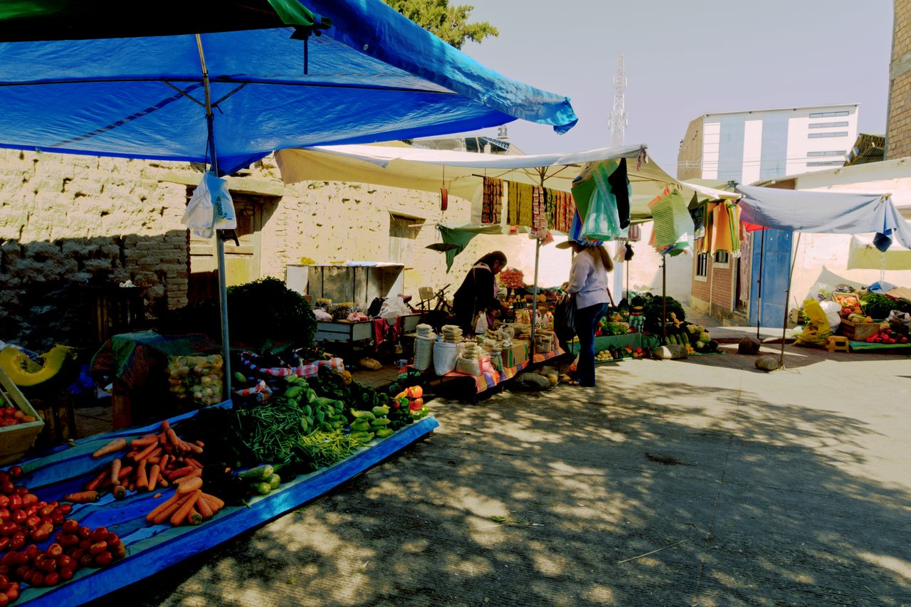

Lo que hacemos, semana a semana
Nuestro trabajo se concentra en la primera infancia y en las familias que la sostienen. Los seis programas comunitarios son gratuitos y abiertos a las familias de Tiquipaya y alrededores.
Los seis programas
-
Primera infancia
Desarrollo integral de la primera infancia
Acompañamiento a las familias durante los primeros 1.000 días de vida —la etapa que define buena parte del desarrollo futuro— con estimulación temprana, juego y orientación a madres, padres y cuidadores.
Para familias con bebés y niñas y niños pequeños · En articulación con el municipio y la red de centros infantiles
-
Salud
Salud materno-infantil
Controles básicos, vacunación y consejería en salud para madres y niños, coordinados con el centro de salud y la red pública del municipio.
Calendario coordinado con la red pública de salud
-
Protección
Protección de la niñez y buen trato
Jornadas de prevención de la violencia, caminatas por la solidaridad y talleres de crianza positiva para construir entornos protectores y libres de violencia.
Con la comunidad educativa y las instituciones locales
-
Nutrición
Nutrición y educación alimentaria
Huertos escolares, talleres de cocina saludable con productos de la zona y merienda en las actividades, para que cada niña y niño crezca con una alimentación real y variada.
Con productos de la zona y del propio huerto
-
Educación
Unidad Educativa «Para la Vida»
Nuestra unidad educativa privada, con niveles de educación inicial y primaria, donde el aprendizaje se construye en el aula, el patio y el huerto.
98 estudiantes · Código RUE 60900057 · Av. Chilimarca, Tiquipaya
-
Familias
Escuela de familias
Un espacio gratuito donde madres, padres y cuidadores aprenden y comparten: cómo bañar a un recién nacido, cuidados básicos, juguetes seguros hechos en casa, alimentación, yoga y cuidado de la propia salud mental.
Con acompañamiento de un equipo multidisciplinario


Cómo inscribirse
- Escríbenos o llámanos. Cuéntanos la edad de tu hija o hijo y el programa que te interesa.
- Ven a una visita. Te invitamos a conocer el espacio y a las personas que acompañan el programa.
- Empieza. Nos sumamos al grupo que corresponde. Todo es gratuito.
Qué llevar: para la escuela de familias solo necesitas la fotocopia de tu carnet, la del Sistema Único de Salud (SUS) y los documentos de tu hija o hijo.
Nada de esto se cobra
Todos los programas comunitarios de SEMCA son gratuitos. No se exige ninguna contribución económica para participar, y ninguna familia es excluida por su situación.
La Unidad Educativa «Para la Vida» es una escuela privada y tiene su propio régimen de costos. Si te interesa ese nivel, consúltanos directamente.